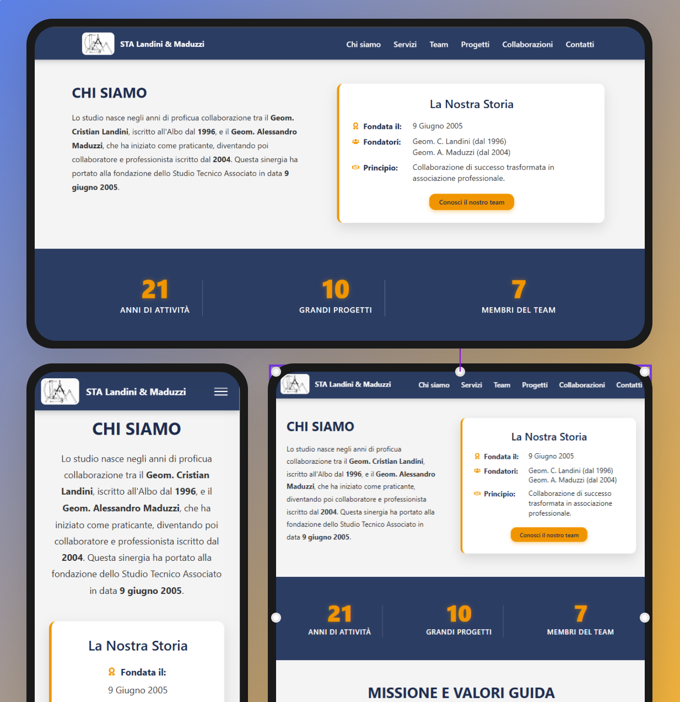

Architecture Studio
Digital Portfolio
End-to-end design and development of a professional web presence
for a local technical surveyor (Geometra).
Translating complex architectural portfolios into an accessible,
client-facing digital experience.
1. Communication & Collaboration
Managing requirements & translating domain expertise
The Real-World Problem: The stakeholder (a senior surveyor) had decades of high-quality architectural work stored in physical folders and raw CAD/PDF files, but lacked a digital channel to build trust with new clients and showcase his expertise.
Eliciting Requirements: Professionals in traditional sectors often know what they do, but not how to present it digitally. I conducted iterative interviews with the stakeholder to extract his core business pillars (e.g., residential renovations, cadastral practices, energy certifications) and establish a clear information architecture.
Bridging the Gap: My role was to act as the translator between his deep technical jargon and the accessible language needed for his target audiences.
2. Process & User Focus
Designing for trust and dual-audience needs
The UX strategy had to balance two distinct users: the private citizen looking to renovate a home, and the industry professional, seeking technical competence and precise service lists.
Information Architecture
- Visual-First Approach: I prioritized high-quality imagery over dense text blocks. Users needed to see the quality of the work immediately upon landing.
- Mobile-First Context: Recognizing that contractors and clients often browse portfolios on-site via smartphones, I ensured the navigation and image galleries were highly responsive and touch-friendly.

3. Problem-Solving & Creativity
Handling heavy assets and storytelling
The "Result-First" Approach: To maximize the architectural impact, I chose an inverse visual narrative. Instead of starting with the construction site, I put the final result front and center: the completed, clean, and livable work. Only after capturing the user's attention with the beauty of the finished project do I reveal the "behind the scenes" of the original state. This immediate contrast doesn't just show a finished job, it highlights the studio’s ability to solve complex problems and transform neglected spaces into residential excellence.

4. Execution & Best Practices
Performance optimization and local SEO
Technical Implementation
A portfolio heavy on high-resolution images can easily suffer from slow load times, increasing the bounce rate. I focused heavily on frontend performance:
- Asset Optimization: I implemented lazy loading to ensure that the high-quality imagery didn't slow down the site, maintaining a fast and responsive experience without sacrificing visual impact
- Technical Solidity: I ensured the site followed a coherent semantic structure, providing good readability and visual contrast to make navigation pleasant for all users.